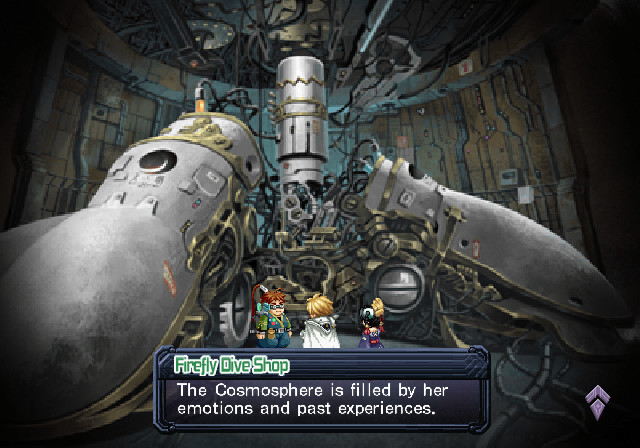
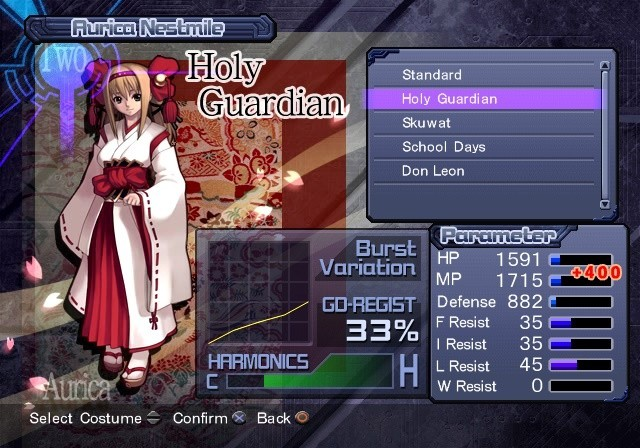

Core Systems & Mechanics
Combat, crafting, and character growth in アルトネリコ interlock through four pillars: Harmonics-driven Song Magic, Cosmosphere Dives, Grathmeld synthesis, and Talk Topic queues.
1. Harmonics & Song Magic
Three Song Magic Spectrums
- Red 詩魔法 (Attack & Burst). Accumulates percentage power each turn your Vanguards fight. Releasing immediately at 100% deals baseline damage, whereas sustaining your song past 300% to 1000%+ clears boss waves effortlessly.
- Blue 詩魔法 (Healing & Ward). Applies continuous regeneration, ailment cure, and elemental shields (ファイアーガード, サンダーガード) while chanting, or triggers an immediate recovery pulse on release.
- Green 詩魔法 (Field Obstacles). Used outside combat on map prompts such as burning thickets in セロの森 or shattering barriers with 樹氷弾.
Harmonics Tiers & Sync Combat
Frontline Vanguards build the ハーモニクス gauge through standard combos, timed ガード inputs protecting the レーヴァテイル, and high-hit arts. Higher Harmonics tiers raise Song charge speed per round and increase combo multipliers up to Sync Level 3.
2. Cosmosphere Dive, Costumes & Talk Topics


Dive Locks & Topic Queues
- トークマター unlock walls. Emotional Trauma barriers inside deep levels only break once you witness specific inn conversations triggered by items crafted via グラスメルク, chest finds, or active battle events.
- Drain inn topics regularly. If dozens of unviewed topics pile up at once, queue overflow during late インストール scenes can stall or crash PS2 hardware. Rest at inns repeatedly after every dungeon sweep.
3. Grathmeld Crafting & Crystal Fusion
Chef Selection & Naming Variants
- Pick the heroine strategically. Selecting オリカ, ミシャ, or シュレリア alters dialogue トークマター and produces different named weapon branches on shared recipes.
- Recrystallize gear via グラスメルク. Turning surplus crafted swords and card packs like Ar Tonelicard SP G into グラスノ結晶 feeds directly into endgame slot customization.